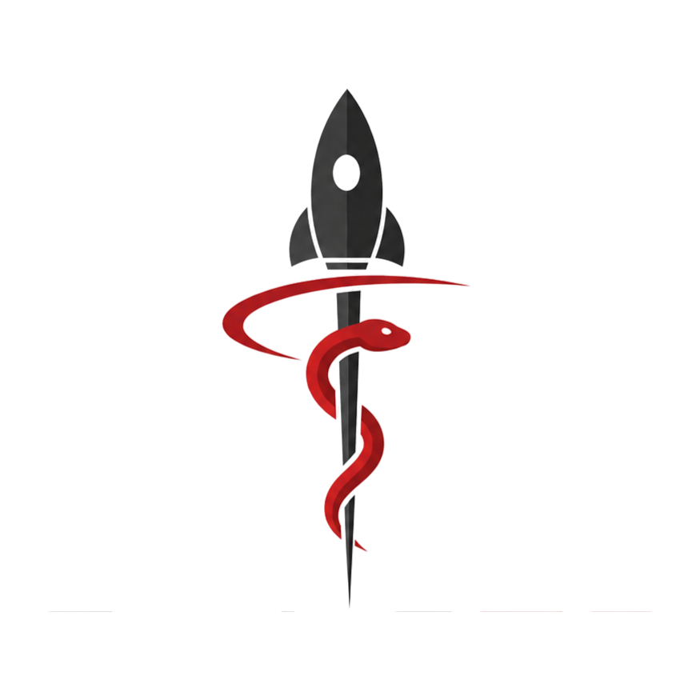

Monitoring w czasie rzeczywistym
Ciągły pomiar parametrów życiowych i ekspozycji środowiskowej, nawet przy ograniczonej łączności z Ziemią.
Budujemy systemy monitoringu biometrycznego i telemedycyny dla misji orbitalnych, stacji badawczych oraz środowisk, w których każda decyzja medyczna musi zapaść bez lekarza na miejscu.

Projektujemy dla:
Im dalej od szpitala, tym więcej zależy od danych zebranych wcześniej i decyzji podjętych na miejscu. Łączymy inżynierię kosmiczną z medycyną ratunkową, żeby ten dystans skrócić.
Ciągły pomiar parametrów życiowych i ekspozycji środowiskowej, nawet przy ograniczonej łączności z Ziemią.
Algorytmy analizują trendy fizjologiczne i sugerują protokoły postępowania, gdy konsultacja z lekarzem jest opóźniona lub niemożliwa.
Urządzenia odporne na mikrograwitację, promieniowanie i wahania temperatury — bez kompromisów w dokładności pomiaru.
Od czujnika na skórze po pulpit lekarza konsultującego z Ziemi — każdy element systemu jest projektowany razem, nie doklejany osobno.
Opaska i naklejane czujniki mierzą tętno, saturację, temperaturę i poziom nawodnienia bez ingerencji w ruchy w skafandrze.
Model wykrywa odchylenia od indywidualnej linii bazowej astronauty i priorytetyzuje alerty według pilności.
Zespół medyczny na Ziemi widzi te same dane co system pokładowy, z opóźnieniem transmisji uwzględnionym w interfejsie.
Określamy warunki pracy — czas trwania misji, dostępność łączności, skład załogi i ryzyka medyczne specyficzne dla środowiska.
Dobieramy zestaw czujników i ustawiamy indywidualne linie bazowe dla każdego członka załogi.
Łączymy system z konsolą naziemną i szkolimy zespół medyczny oraz załogę z obsługi alertów.
Po starcie misji analizujemy dane telemetryczne i aktualizujemy modele wraz z nowymi obserwacjami.
Miejsce na przedstawienie founderów i kluczowych osób — poniżej przykładowy układ do uzupełnienia danymi zespołu.
CEO & Współzałożyciel
Tło w medycynie ratunkowej i zarządzaniu produktem medtech.
CTO & Współzałożycielka
Doświadczenie w systemach wbudowanych dla sektora kosmicznego.
Dyrektor Medyczny
Specjalizacja w medycynie lotniczej i intensywnej terapii.
Szukasz partnera do badań, technologii albo wdrożenia? Jesteśmy gotowi słuchać.
Skontaktuj się z nami ↗Odpowiadamy w ciągu 2 dni roboczych. Opisz krótko swoje środowisko misji, a przygotujemy wstępną propozycję konfiguracji.